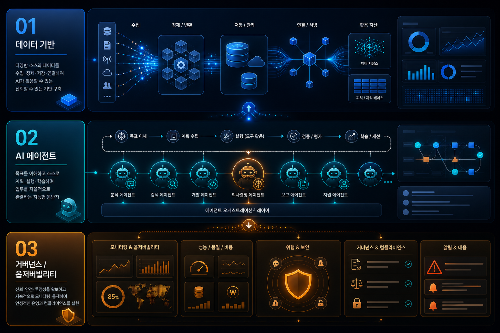
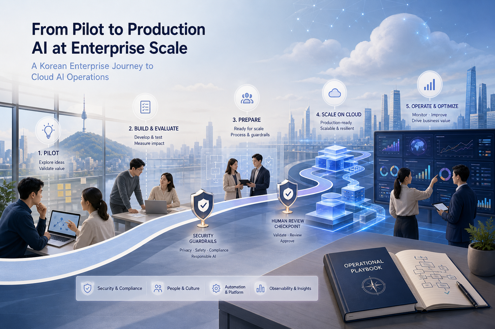

현대오토에버의 GenAI Sandbox 활용 생산성 향상 Hackathon: 혁신과 협업의 성공 사례
현대오토에버와 AWS가 GenAI Sandbox를 구축하고 14개 팀, 150명이 참여한 해커톤을 통해 생성형 AI 실험·검증·프로덕션 전환의 기반을 만든 사례다. 핵심은 보안·비용·권한·네트워크·개발 패키지를 사전에 표준화해 개발자가 행정/인프라 리드타임 없이 업무 혁신 아이디어를 구현하도록 만든 점이다.
원문 보기이번 실행에서는 신규 RSS 수집 건이 없어, 최근 24시간 내 로컬 AWS 수집 문서 4건을 보조 입력으로 사용했다. 따라서 오늘의 전략 판단은 확인 필요 꼬리표를 달되, 현대오토에버 GenAI Sandbox·Bedrock 멀티 에이전트 AIOps·Nova Act HIPAA eligibility가 보여주는 방향성은 분명하다: 기업 AI 경쟁력은 모델 선택보다 운영 표준화, 거버넌스, 반복 업무 자동화 역량에서 갈린다.
GenAI Sandbox 사례는 보안·권한·비용·네트워크를 미리 표준화한 실험 환경이 현업의 AI 아이디어 실행 속도를 끌어올린다는 점을 보여준다.
Bedrock·LangGraph·OpenSearch 기반 장애 대응 에이전트는 감지, RCA, 반증, 보고, 승인 흐름을 분리해 MTTR 단축과 운영 지식 자산화를 동시에 노린다.
Nova Act HIPAA eligibility는 UI 기반 agentic automation도 감사·암호화·BAA·책임 분계와 결합되어야 enterprise adoption이 가능하다는 신호다.
중앙 AI 조직이 모든 앱을 만드는 방식보다, 표준 샌드박스에서 현업이 검증하고 운영 조직이 production 전환을 지원하는 모델이 현실적이다.

최근 AWS 사례의 공통 축은 개별 생성형 AI 앱이 아니라 반복 가능한 운영 시스템이다. 샌드박스는 실험 리드타임을 줄이고, 멀티 에이전트 장애 대응은 운영 판단을 구조화하며, HIPAA eligible Nova Act는 규제 업무의 브라우저 기반 자동화 가능성을 확장한다. 세 흐름 모두 데이터 접근, 권한 경계, 로그·감사, human review가 설계의 중심에 놓인다.

RCA-A/RCA-B 병렬 분석, 자체 반증, Reflector 교차검증 같은 구조를 기본 패턴으로 둔다.
ABAC, Permission Set, read-only 진단, KMS 암호화, 민감정보 탐지를 샌드박스부터 강제한다.
복구 명령 실행은 초기에는 승인 기반으로 제한하고, 실행 로그와 롤백 절차를 함께 설계한다.
HIPAA eligibility는 출발점일 뿐이며 한국 의료·보험·공공 적용은 국내 개인정보·의료정보·클라우드 인증 정책에 맞춘 별도 검증이 필요하다.
현대오토에버와 AWS가 GenAI Sandbox를 구축하고 14개 팀, 150명이 참여한 해커톤을 통해 생성형 AI 실험·검증·프로덕션 전환의 기반을 만든 사례다. 핵심은 보안·비용·권한·네트워크·개발 패키지를 사전에 표준화해 개발자가 행정/인프라 리드타임 없이 업무 혁신 아이디어를 구현하도록 만든 점이다.
원문 보기현대오토에버 차량제어서비스개발팀의 ErrorWatcher는 LangGraph 기반 다중 에이전트로 장애 감지, 근본 원인 분석, 해결책 제시, 보고서 생성을 자동화해 장애 대응 시간을 수 시간에서 5분 수준으로 단축한 사례다.
원문 보기현대오토에버 데이터플랫폼기술팀은 Hadoop 기반 빅데이터 클러스터 운영에서 LangGraph, Amazon OpenSearch Service, Amazon Bedrock을 결합해 장애 대응 자동화 에이전트를 설계했다. 병렬 RCA, 자체 반증, Checkpoint, read-only 진단, Human-in-the-Loop 승인으로 운영 자동화와 안전성을 동시에 추구한다.
원문 보기Amazon Nova Act가 HIPAA eligible service가 되면서 헬스케어·생명과학 조직이 ePHI가 포함될 수 있는 브라우저 기반 반복 업무를 agentic AI로 자동화할 수 있는 길이 열렸다.
원문 보기| 블로그 | 문서 | 발행일 | 원문 |
|---|---|---|---|
| Korea Tech | 현대오토에버의 GenAI Sandbox 활용 생산성 향상 Hackathon: 혁신과 협업의 성공 사례 | Fri, 22 May 2026 02:08:59 +0000 | 링크 |
| Korea Tech | 현대오토에버의 Amazon Bedrock으로 구축한 다중 AI 에이전트: 장애 대응 시간 5분으로 단축하기 | Fri, 22 May 2026 02:46:02 +0000 | 링크 |
| Korea Tech | 현대오토에버의 Amazon Bedrock으로 구축한 빅데이터 클러스터 장애 대응 자동화 에이전트 구축기 | Fri, 22 May 2026 02:50:42 +0000 | 링크 |
| Machine Learning | Amazon Nova Act is now HIPAA eligible | Thu, 21 May 2026 22:22:28 +0000 | 링크 |
Image Prompt 1 Purpose: Hero image for an executive Korean AWS strategy blog about enterprise AI operations automation. Insertion position: Hero section after headline. Image2 prompt: Create a polished executive technology blog hero illustration, 16:9. Theme: Korean enterprise AI operations center using AWS cloud, Amazon Bedrock multi-agent orchestration, AIOps incident response automation, data platforms, observability, governance. Modern premium editorial style, deep navy and AWS orange accents, abstract cloud architecture, Korean enterprise context, no logos, no brand marks, no readable trademark text, professional and optimistic. Include subtle Korean visual atmosphere but no garbled visible text. Ratio: 16:9 Alt text: AWS 기반 엔터프라이즈 AI 운영 자동화 전략을 표현한 히어로 이미지 Image Prompt 2 Purpose: Infographic visual for trend analysis section. Insertion position: Core trend analysis section. Image2 prompt: Create a clean strategy infographic illustration, 16:9, showing three connected layers: Data foundation, AI agents, Governance/observability. Use abstract diagrams, dashboards, cloud nodes, risk controls, decision loops. Executive blog style, dark background with bright cyan and orange highlights, Korean enterprise audience, no company logos, no readable text except minimal abstract labels if necessary. Ratio: 16:9 Alt text: 데이터 기반과 AI 에이전트, 거버넌스 계층을 연결한 전략 인포그래픽 Image Prompt 3 Purpose: Practical roadmap visual for execution strategy section. Insertion position: Execution strategy section before roadmap table. Image2 prompt: Create a premium editorial roadmap illustration, 16:9, depicting a Korean enterprise moving from pilot AI automation to production-scale cloud AI operations. Visual motifs: roadmap path, security guardrails, human review, AWS cloud services as abstract blocks, analytics dashboards, operational playbook. No logos, no copyrighted marks, avoid dense text, modern blog article visual. Ratio: 16:9 Alt text: PoC에서 운영 확산으로 가는 엔터프라이즈 AI 실행 로드맵 이미지